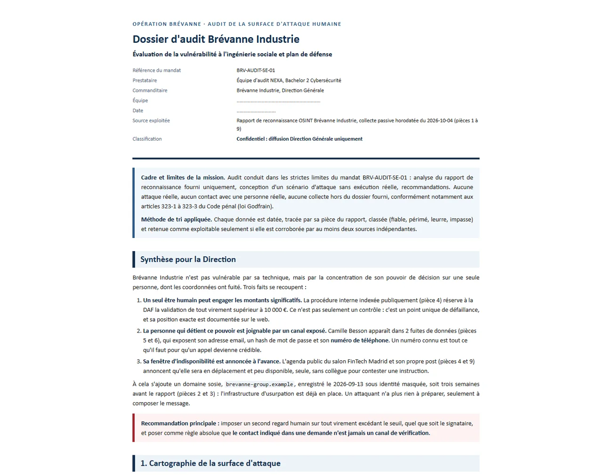

01 · Analyse de risques · 2026
Audit de vulnérabilité à l'ingénierie sociale
Prendre un rapport de reconnaissance OSINT, décider quelle donnée est vraiment exploitable, et construire l'attaque la plus crédible sans jamais l'exécuter.
- Cadre
- Mandat fictif BRV-AUDIT-SE-01
- Rôle
- Analyste, rédaction du dossier
- Format
- Projet d'équipe
- Livrable
- Dossier classifié, synthèse direction

Contexte
Une entreprise fictive, un rapport de reconnaissance OSINT livré tel quel : neuf pièces, collecte passive horodatée, sites publics, registres de domaines, fuites de données. Le mandat ne demande pas de collecter, mais de lire. Aucune donnée hors dossier, aucun contact réel, scénario d'attaque interdit d'exécution.
Contrainte supplémentaire : le dossier est destiné à une direction générale. Une page de conclusion doit suffire, sans jargon.
La question posée
Est-ce qu'un attaquant, avec seulement ce que le web public raconte, peut obtenir un virement de plus de 10 000 euros ?
Ce que j'ai fait
Le travail n'est pas la collecte, c'est le tri. Un rapport OSINT contient toujours plus de bruit que de signal, et un scénario bâti sur une donnée fausse s'effondre au premier contact avec la cible.
- Datation et traçabilité. Chaque donnée est rattachée à sa pièce et à sa date. Une information sans source n'existe pas.
- Quatre statuts. Fiable, périmé, leurre, impasse, avec le motif écrit de chaque écart.
- Règle de corroboration. Une donnée n'est retenue que si deux sources indépendantes la confirment.
- Cartographie. Onze éléments retenus, du domaine sosie au service distant exposé.
- Choix de la cible prioritaire et construction du scénario en deux plans, avec le plan de repli.
- Minimisation. Toute donnée personnelle sans lien avec l'objectif est écartée, même disponible.
Les écarts les plus instructifs
| Donnée | Statut | Pourquoi elle est écartée |
|---|---|---|
| Page « Équipe » désignant un autre directeur financier | Leurre | Page non mise à jour depuis 2021. Un scénario qui invoquerait ce nom se ferait démasquer immédiatement. |
| Communiqué annonçant un partenariat stratégique | Périmé | Un article plus récent documente la rupture. Le prétexte déclencherait une vérification. |
| Message de forum sur un bug du logiciel de paie | Impasse | Spectaculaire, invérifiable, sans rapport avec le circuit de paiement. |
| Profil personnel de la cible, loisirs et animal | Exploitable, non utilisé | Donnée privée sans lien avec l'objectif. Un prétexte bâti dessus ferait basculer la cible dans la méfiance. |
| Bannières présentées comme « à jour » | À recouper | Les versions citées datent de 2018 et 2020. À reclasser en vulnérabilité technique, hors du scénario humain. |
Résultat
La conclusion est un renversement : l'entreprise n'est pas vulnérable par sa technique, elle l'est par la concentration de son pouvoir de décision sur une seule personne joignable et isolable. Trois faits se recoupent.
- Une procédure interne indexée publiquement réserve la validation des virements au dessus du seuil à la directrice financière. Le nom du seul décideur à convaincre est donc public, et le seuil aussi.
- Cette personne apparaît dans deux fuites qui exposent son email, un hash de mot de passe et surtout son numéro de téléphone. Un numéro connu, c'est ce qui rend un appel crédible.
- Son agenda public annonce son absence. La fenêtre où elle est seule, sans collègue pour contester une instruction, est connue à l'avance.
- Un domaine sosie enregistré sous identité masquée, trois semaines avant le rapport, montre que l'infrastructure d'usurpation existe déjà.
- Données triées
- 19
- Retenues / écartées
- 11 / 8
- Corroboration exigée
- 2 sources
Recommandation principale : imposer un second regard humain sur tout virement dépassant le seuil, quel que soit le signataire, y compris quand le demandeur est la personne qui détient ce pouvoir.
Règle absolue : le contact indiqué dans une demande n'est jamais un canal de vérification. On raccroche et on rappelle sur un numéro connu par ailleurs.
Limites
- Scénario non exécuté, par construction du mandat. Sa crédibilité repose sur la lecture, pas sur un test réel.
- La fiabilité du rapport OSINT fourni n'a pas été auditée : deux sources issues de la même origine resteraient fausses.
- Aucun chiffrage du coût des mesures, ce qui limite leur portée décisionnelle.
- Analyse humaine et qualitative, qui ne remplace pas une revue de configuration.
Ce que j'en retiens
La donnée la plus spectaculaire est rarement la plus utile. Le bug de forum faisait une meilleure histoire que la procédure de virement indexée, et il ne servait à rien. Inversement, un document public ennuyeux a donné à la fois l'identité du décideur, le seuil et le contournement possible.
Deuxième leçon : la piste la plus évidente était la plus fragile. Contourner un contrôle se referme en réécrivant une phrase. Convaincre la personne qui incarne le contrôle est beaucoup plus difficile à corriger.